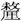
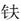
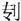

春秋公羊传卷二十四
昭公下
昭公二十三年
春，王正月，叔孙舍如晋。
癸丑，叔鞅卒。
晋人执我行人叔孙舍。
晋人围郊。郊者何？天子之邑也。曷为不系于周？不与伐天子也。
夏六月，蔡侯东国卒于楚。
秋七月，莒子庚舆来奔。
戊辰，吴败顿、胡、沈、蔡、陈、许之师于鸡父。胡子髡、沈子楹灭，获陈夏啮。此偏战也，曷为以诈战之辞言之？不与夷狄之主中国也。然则曷为不使中国主之？中国亦新夷狄也。其言灭获何？别君臣也，君死于位曰灭，生得曰获，大夫生死皆曰获。不与夷狄之主中国，则其言获陈夏啮何？吴少进也。
天王居于狄泉。此未三年，其称天王何？著有天子也，尹氏立王子朝。
八月乙未，地震。
冬，公如晋，至河，公有疾乃复。何言乎公有疾乃复？杀耻也。
昭公二十四年
春，王二月丙戌，仲孙玃卒。
叔孙舍至自晋。
夏五月乙未朔，日有食之。
秋八月，大雩。
丁酉，杞伯郁卒。
冬，吴灭巢。
葬杞平公。
昭公二十五年
春，叔孙舍如宋。
夏，叔倪会晋赵鞅、宋乐世心、卫北宫喜、郑游吉、曹人、邾娄人、滕人、薛人、小邾娄人于黄父。
有鹳鹆来巢。何以书？记异也。何异尔？非中国之禽也，宜穴又巢也。
秋七月，上辛大雩。季辛又雩。又雩者何？又雩者非雩也，聚众以逐季氏也。
九月己亥，公孙于齐，次于杨州。
齐侯唁公于野井。唁公者何？昭公将弑季氏，告子家驹曰：“季氏为无道，僭于公室久矣，吾欲弑之何如？”子家驹曰：“诸侯僭于天子，大夫僭于诸侯久矣。”昭公曰：“吾何僭矣哉？”子家驹曰：“设两观，乘大路，朱干、玉戚，以舞《大夏》，八佾以舞《大武》，此皆天子之礼也。且夫牛马维娄，委己者也，而柔焉。季氏得民众久矣，君无多辱焉。”昭公不从其言，终弑而败焉。走之齐，齐侯唁公于野井，曰：“奈何君去鲁国之社稷？”昭公曰：“丧人不佞，失守鲁国之社稷，执事以羞。”再拜颡，庆子家驹曰：“庆子免君于大难矣。”子家驹曰：“巨不佞，陷君于大难，君不忍加之以锧，赐之以死。”再拜颡。高子执箪食与四脡脯，国子执壶浆，曰：“吾寡君闻君在外，馂饔未就，敢致糗于从者。”昭公曰：“君不忘吾先君，延及丧人，锡之以大礼。”再拜稽首，以衽受。高子曰：“有夫不祥，君无所辱大礼。”昭公盖祭而不尝。景公曰：“寡人有不腆先君之服，未之敢服。有不腆先君之器，未之敢用，敢以请。”昭公曰：“丧人不佞，失守鲁国之社稷，执事以羞，敢辱大礼，敢辞。”景公曰：“寡人有不腆先君之服，未之敢服，有不腆先君之器，未之敢用，敢固以请。”昭公曰：“以吾宗庙之在鲁也，有先君之服，未之能以服，有先君之器，未之能以出，敢固辞。”景公曰：“寡人有不腆先君之服，未之敢服，有不腆先君之器，未之敢用，请以飨乎从者。”昭公曰：“丧人其何称？”景公曰：“孰君而无称。”昭公于是噭然而哭，诸大夫皆哭。既哭，以人为菑，以幦为席，以鞌为几，以遇礼相见。孔子曰：“其礼与其辞足观矣！”
冬十月戊辰，叔孙舍卒。
十有一月己亥，宋公佐卒于曲棘。曲棘者何？宋之邑也。诸侯卒其封内不地，此何以地？忧内也。
十有二月，齐侯取运。外取邑不书？此何以书？为公取之也。
昭公二十六年
春，王正月，葬宋元公。
三月，公至自齐，居于运。
夏，公围成。
秋，公会齐侯、莒子、邾娄子、杞伯盟于陵。公至自会，居于运。
九月庚申，楚子居卒。
冬十月，天王入于成周。成周者何？东周也。其言入何？不嫌也。尹氏、召伯、毛伯以王子朝奔楚。
昭公二十七年
春，公如齐。公至自齐，居于运。
夏四月，吴弑其君僚。
楚杀其大夫郤宛。
秋，晋士鞅、宋乐祁犂、卫北宫喜、曹人、邾娄人、滕人会于扈。
冬十月，曹伯午卒。
邾娄快来奔。邾娄快者何？邾娄之大夫，邾娄无大夫也。此何以书？以近书也。
公如齐，公至自齐，居于运。
昭公二十八年
春，王三月，葬曹悼公。
公如晋，次于乾侯。
夏四月丙戌，郑伯宁卒。
六月，葬郑定公。
昭公二十九年
春，公至自乾侯，居于运。
齐侯使高张来唁公。
公如晋，次于乾侯。
夏四月庚子，叔倪卒。
秋七月。
冬十月，运溃。邑不言溃，此其言溃何？郛之也。曷为郛之？君存焉尔。
昭公三十年
春，王正月，公在乾侯。
夏六月庚辰，晋侯去疾卒。
秋八月，葬晋顷公。
冬十有二月，吴灭徐，徐子章禹奔楚。
昭公三十一年
春，王正月，公在乾侯。
季孙隐如会晋荀栎于适历。
夏四月丁巳，薛伯谷卒。
晋侯使荀栎唁公于乾侯。
秋，葬薛献公。
冬，黑弓以滥来奔。文何以无邾娄？通滥也。曷为通滥？贤者子孙宜有地也。贤者孰谓？谓叔术也。何贤乎叔术？让国也。其让国奈何？当邾娄颜之时，邾娄女有为鲁夫人者，则未知其为武公与，懿公与？孝公幼，颜淫九公子于宫中，因以纳贼，则未知其为鲁公子与，邾娄公子与。臧氏之母，养公者也。君幼则宜有养者，大夫之妾，士之妻，则未知臧氏之母者曷为者也。养公者必以其子入养。臧氏之母闻有贼，以其子易公，抱公以逃，贼至凑公寝而弑之。臣有鲍广父与梁买子者闻有贼，趋而至，臧氏之母曰：“公不死也，在是，吾以吾子易公矣。”于是负孝公之周诉天子，天子为之诛颜而立叔术，反孝公于鲁。颜夫人者，妪盈女也，国色也。其言曰：“有能为我杀杀颜者，吾为其妻。”叔术为之杀杀颜者，而以为妻，有子焉谓之盱。夏父者，其所为有于颜者也。盱幼而皆爱之，食必坐二子于其侧而食之，有珍怪之食，盱必先取足焉。夏父曰：“以来，人未足而盱有余。”叔术觉焉，曰：“嘻！此诚尔国也夫！”起而致国于夏父，夏父受而中分之，叔术曰：“不可！”三分之，叔术曰：“不可！”四分之，叔术曰：“不可！”五分之，然后受之。公扈子者，邾娄之父兄也，习乎邾娄之故，其言曰：“恶有言人之国贤若此者乎！”诛颜之时，天子死，叔术起而致国于夏父。当此之时，邾娄人常被兵于周，曰：“何故死吾天子？”通滥则文何以无邾娄？天下未有滥也。天下未有滥，则其言以滥来奔何？叔术者，贤大夫也，绝之则为叔术不欲绝，不绝则世大夫也，大夫之义不得世，故于是推而通之也。
十有二月辛亥朔，日有食之。
昭公三十二年
春，王正月，公在乾侯。
取阚。阚者何？邾娄之邑也。曷为不系乎邾娄？讳亟也。夏，吴伐越。
秋七月。
冬，仲孙何忌会晋韩不信，齐高张、宋仲几、卫世叔申、郑国参、曹人、莒人、邾娄人、薛人、杞人、小邾娄人城成周。
十有二月己未，公薨于乾侯。